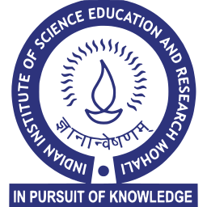
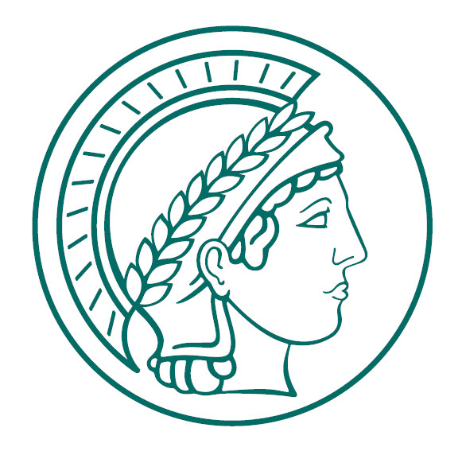
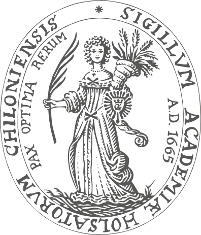

01Profile Summary
I am a biophysics student at IISER Mohali working on membrane mechanics, plasma membrane vesicles, and quantitative image analysis. My research focuses on studying membrane morphology and mechanical properties using fluorescence microscopy and computational analysis tools. My current work involves quantitative analysis of giant plasma membrane vesicles (GPMVs) and biomimetic membrane systems.
02Education

Indian Institute of Science Education and Research (IISER) Mohali03Research

Max Planck Institute of Biophysics, Frankfurt | Supervisor: Dr. Uris Ros- Investigating time-dependent biophysical profiles (tension, rigidity, permeability) in giant plasma membrane vesicles (GPMVs) across regulated cell death channels.
- Engineered micro-contour tracking protocols for biomimetic and plasma membrane vesicles.
- Configured automated algorithm suites for geometric parameter parsing from brightfield and fluorescence microscopy datasets to isolate baseline membrane deviations.

University of Kiel, Germany (Remote) | Supervisor: Prof. Jan Steinkühler- Executed numerical simulations of DNA-based spring–mass systems modeled on structural multi-layered Worm-Like Chain networks.
- Evaluated processing constraints of physical learning arrays across nonlinear dynamical multi-task behaviors.
04Publications
05Code & Tools
VesEvol — Vesicle Evolution over Long Time. Image-analysis program for tracking and quantifying vesicle shape evolution over extended time periods.
Open-source automation pipeline for micro-contour extraction, local curvature calculations, and quantitative mechanical analysis of biomimetic and plasma membrane vesicles.
06What I Know
Microscopy & Optics
Advanced optical microscopy alignment; manual GPMV isolation from cell frameworks; mammalian line management (HEK293T).
Image Segmentation
Deep-learning CNN image processing setups; automated geometric boundary parsing; custom manual validation UI tools.
Scientific Compute
Python (Numerical/Data stack), MATLAB, JavaScript. Programmatic structural pipeline engineering optimized for rapid image batch validation.